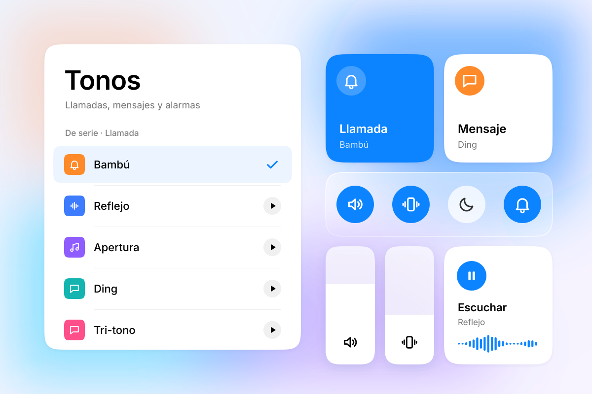
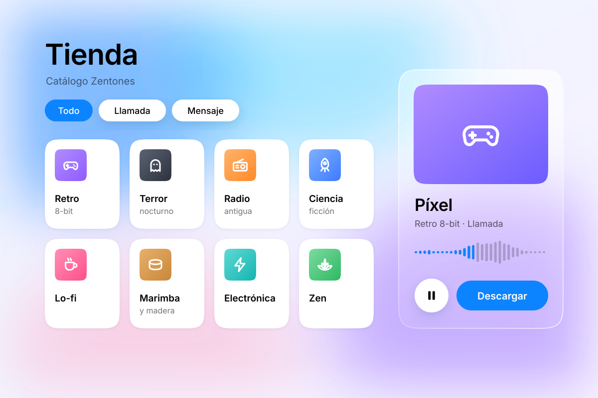
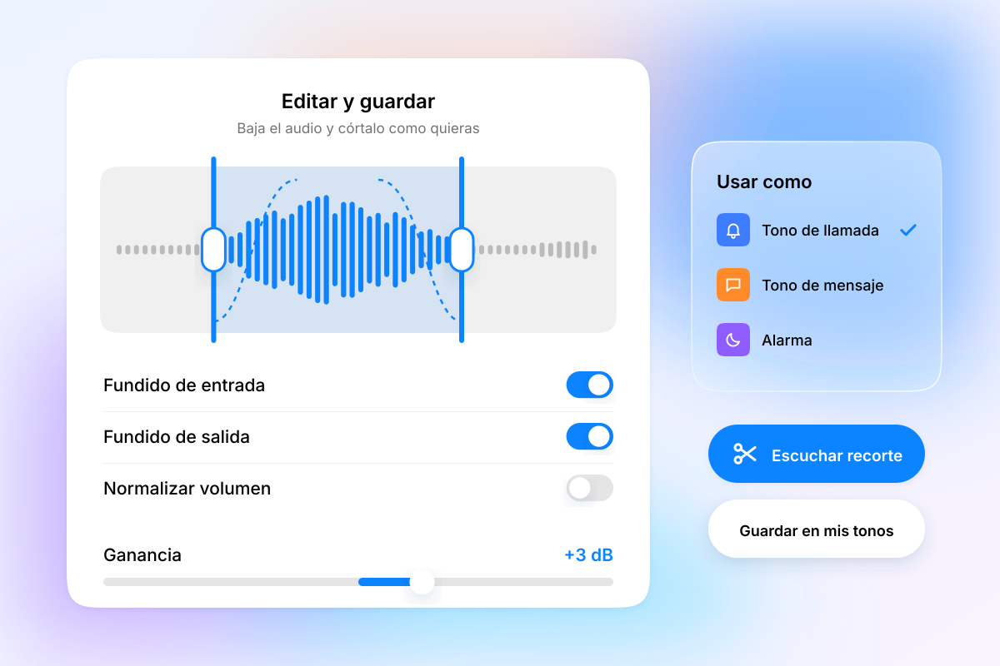
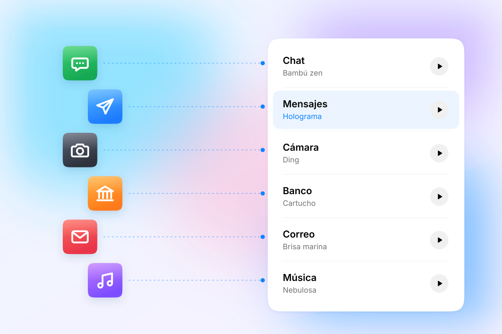

Estilo HyperOS · Aireado, rebote y azul
Un tono para cada cosa. Y para cada app.
Zentones cambia el tono de llamada, de mensajes y de alarma, y te guía para poner uno distinto en cada app. Con tienda de tonos originales, editor de recortes y una interfaz que en tu Xiaomi, Redmi o POCO se viste sola de HyperOS.
- 140tonos originales
- 10categorías
- 18tonos de serie
- 10+versión de Android
Tonos
Llamadas, mensajes y alarmas
Sistema
- Tono de llamadaBambú
- NotificacionesTri-tono
- AlarmaSistema
Crear
- Desde YouTubeBusca una canción, baja el audio y córtalo
- Desde un audio del móvilRecorta cualquier canción o sonido que tengas
De serie · Llamada
- BambúMarimba de madera, alegre y saltarina
- ReflejoArpegio de kalimba sobre acordes suaves
- AperturaEscalas de marimba que se abren hacia arriba
Tienda
140 tonos en el catálogo · Freesound · YouTube
Catálogo Zentones
- PíxelLlamada · 7,2 s · Retro 8-bit
- CartuchoMensaje · 2,2 s · Retro 8-bit
- MedianocheLlamada · 7,2 s · Terror nocturno
- Onda mediaLlamada · 7,9 s · Radio antigua
- HologramaMensaje · 2,6 s · Ciencia ficción
Apps
Elige un tono y te guiamos para ponerlo en cada app
Ya configuradas
- ChatLlamada: Bambú · Mensaje: Ding
- AviónMensaje: Burbuja
Todas las apps
- Banco
- Cámara
- ChatLlamada: Bambú · Mensaje: Ding
- Correo
- Música
Ajustes
Estilo de interfaz
- Según mi móvilXiaomi → HyperOS
Apariencia
- AutomáticoSigue al sistema
- Claro
- Oscuro
Actualizaciones
- Buscar al abrirMira GitHub cada vez que abres la app
- Repositorioluckicla/ZenTones
Tonos
Llamadas, mensajes y alarmas, en una sola lista.
Toca una fila y eliges entre tus tonos y los 18 de serie, sintetizados en la propia app. Zentones los aplica como tono general del sistema.
De serie · Llamada
- BambúMarimba de madera, alegre y saltarina
- FaroPulsos de radar, imposible no oírlo
- ClásicoCampanilla de teléfono de toda la vida
De serie · Mensaje
- DingEl ding de siempre
- Tri-tonoTres notas de cristal hacia arriba
- GotaKalimba que cae como una gota

Piezas de la interfaz
Mosaicos grandes, cristal y rebote.
Cada pieza de Zentones se dibuja a la manera de HyperOS: tarjetas blancas de esquinas suaves, interruptores azules, iconos en cuadrados de color y barras de cristal que dejan ver lo que hay detrás.
Botones
Chips
Buscador
- Buscar al abrirMira GitHub cada vez que abres la app
- Cambiar tonos del sistemaPara los tonos generalesActivo
- API key de FreesoundSin configurar · gratis en freesound.org
Tienda
140 tonos originales en 10 categorías.
Todos hechos para Zentones y con licencia CC0. Escucha uno de cada categoría aquí mismo. En la app, además, buscas entre los sonidos de Freesound y bajas audio de YouTube con yt-dlp.

Pulsa Esc para parar el sonido. Al descargar un tono en la app se abre el editor para recortarlo antes de guardarlo.
Editor
Corta justo el trozo que quieres.
Forma de onda con dos tiradores, fundido de entrada y de salida, normalizar volumen y ganancia de −12 a +12 dB. Escuchas el recorte y lo guardas como tono de llamada o de mensaje.
Se abre al bajar un tono de la tienda, al traer audio de YouTube o con Compartir → Zentones desde cualquier app de música o archivos.

Editar y guardar
0:00,6 → 0:05,6 · 5,1 s
Arrastra cerca de un borde para moverlo, o toca para colocarlo.
Ajustes
- Fundido de entrada
- Fundido de salida
- Normalizar volumenLo deja al máximo sin distorsionar
Usar como
- Tono de llamadaSuena en bucle
- Tono de mensajeMejor si dura menos de 3 s
Por app
Un tono distinto para cada app.
Eliges la app y el tono. Zentones lo copia a las carpetas de Tonos o Notificaciones del móvil y te guía paso a paso hasta donde se selecciona. No se queda escuchando ni suena por encima de otras apps.

Ya configuradas
- ChatLlamada: Bambú · Mensaje: Ding
- AviónMensaje: Burbuja
- CorreoMensaje: Campanilla
Chat
Listo, el tono ya está en tu móvil. Ahora selecciónalo en Chat:
- 1Toca «Abrir ajustes de notificaciones» aquí abajo
- 2Entra en la categoría que quieras (por ejemplo «Mensajes» o «Chats»)
- 3Toca «Sonido»
- 4Elige «Zentones · Ding» en la lista
Los nombres pueden cambiar un poco según la app y tu versión de Android.
Descarga Zentones
APK para Android 10 o superior. En un Xiaomi, Redmi o POCO se abre directamente con este estilo; en Ajustes puedes cambiar a Pixel, One UI o Sony cuando quieras.
Descargar APKLa app busca actualizaciones en GitHub al abrirse y se actualiza sola.